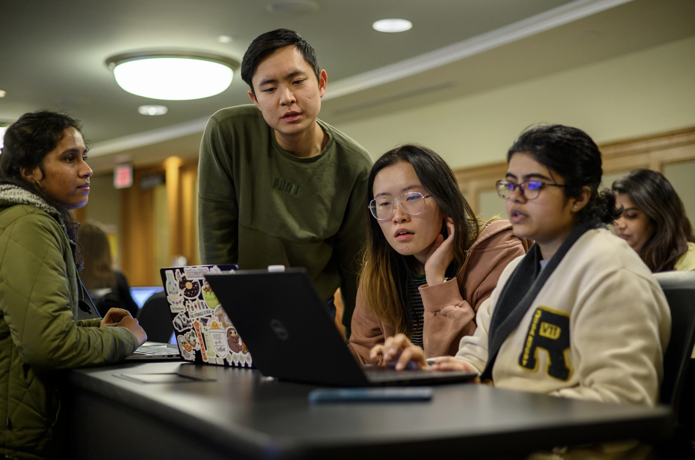

The University of Michigan School of Information (UMSI) is committed to fostering an inclusive and supportive environment by offering a wide range of community-building resources. These resources are tailored to meet the diverse needs of students, including transfer students, international students, and students with disabilities. UMSI provides specialized programs and workshops that focus on building connections, navigating unique challenges, and enhancing the overall student experience. Through mentorship opportunities, dedicated support services, and social events, UMSI ensures that every student feels a sense of belonging and has access to the tools needed to thrive both personally and academically.
Services for Students with Disabilities office (SSD)
SSD is committed to creating an inclusive and equitable educational environment for disabled students through academic support, adaptive sports, paratransit, and more. To learn more, click on this link.
The First-Generation Student Program
The First-Generation Student Program collects and shares stories from other first-generation college students and graduates to inspire and offer advice to current and future first gens. They also compile useful information about college life, paying for college and other programs and services. To learn more, click on this link.

Students work in a classroom.
Center for the Education of Women + (CEW+)
CEW+ provides academic, financial, and professional for women in higher education through career and education counseling, funding, workshops, events, and a diverse, welcoming community. To learn more, click on this link.
Graduates celebrate 2024 Spring Commencement.
English Language Institute (ELI)
The ELI is an academic department in U-M's College of Literature, Science, and the Arts that provides a full range of English for Academic Purposes graduate courses and other types of language and academic support for international students and scholars. This includes one-on-one speaking and writing support, academic advising, and undergraduate courses and workshops for international students and other speakers of English as an additional language. To learn more, click on this link.